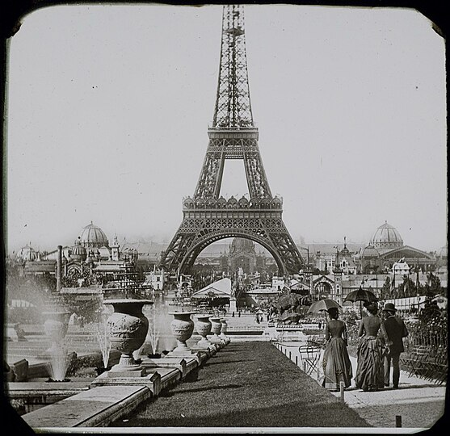
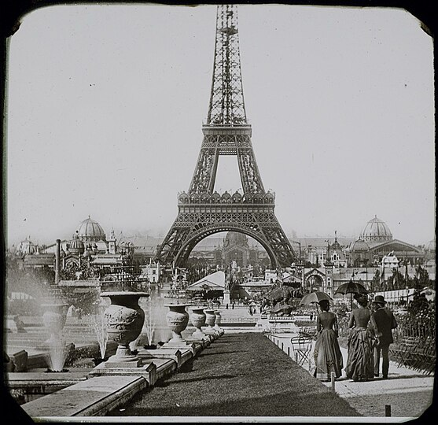

La historia de la Torre Eiffel
La Torre Eiffel es un símbolo icónico de la ciudad de París y su historia es realmente fascinante.
Autors de la esta obra
Mayo de 1884, fue diseñado por Maurice Koechlin y Émile Nouguier.
Gustave Eiffel, el jefe(boss) de la empresa de construcción de puentes(bridges) : compró la idea y la publicitó(advertise).
1 de mayo de 1886: la torre Eiffel gana un concurso
convertirse en el principal símbolo (main symbol) de la Feria,
sirvió como arco de entrada (entrance arch) a la Feria.
 

El 8 de enero de 1887, Eiffel y su proyecto recibieron un financiamiento de 1.5 millones francs por el gobierno,
pero el costo estimado fue de 6.5 millones.
construcción
18 de julio de 1887: Inicio de la construcción de la carpintería metálica.
7 de diciembre de 1887: Construcción de las patas
20 de marzo de 1888: finalización del primera etapa.
15 de mayo de 1888: Inicio de la construcción de la segunda etapa.
21 de agosto 1888: finalización del segunda etapa.
26 de diciembre de 1888: Construcción del escenario superior.
15 de marzo de 1889: Construcción de la cúpula.
26 de enero de 1887--31 de marzo de 1889
2 años, 2 meses y 5 días
La inauguración fue el 15 de mayo de 1889
patrimonio mundial
cuanto estuvo inscrita en parte del patrimonio mundial UNESCO en 1991
ya había sido declarada monumento protegido en 1964
30.05.2023
¡Gracias!